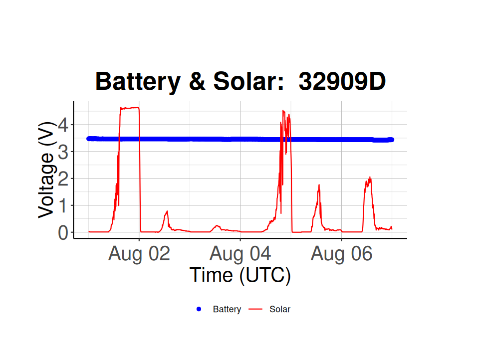
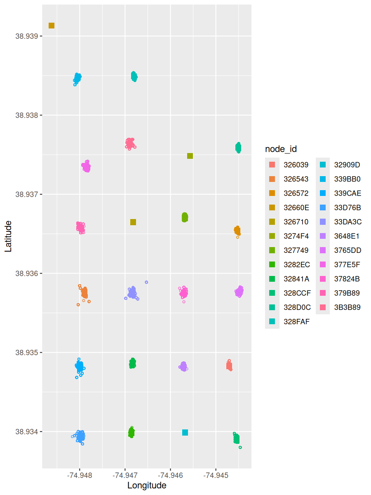

Chapter 5 Node Check
With your data you can run the following analyses:
- Presence/absence using detection times
- Activity budget using the change in signal strength over time
- Habitat Use using localization
- Home range/territory size
- Movement patterns
Before you can do any of that, it is a good idea to check if your nodes are working properly, and filter out any that are malfunctioning.
5.1 Node Health
Things to look at:
- Recent health records and detections
- Battery Level
- Are they charging?
- GPS fixes
- Synchronized clocks?
For example, debris on solar panels can lead to the node not to charge, which means the battery voltage will drop, which stops the GPS, leading to an out of sync clock.
Another example is that foliage cover leads to no charging, low battery voltage, stops the GPS, and leads to an out of sync clock.
5.1.1 Node Health - Check Health Records
5.1.1.1 Load Data from Database
library(celltracktech)
# load env file into environment
load_dot_env(file='.env')
# Settings - ----------------------------------------------------------------
# These were created in Chapter 2. If you do not have these in your project directory, go back and repeat Ch. 2.
my_token <- Sys.getenv('API_KEY') # load env variable into my_token
myproject <- "Meadows V2" # this is your project name on your CTT account, here we are using the CTT project 'Meadows V2'
outpath <- "./data/" # where your downloaded files are to go
# Specify the time range of node data you want to import for this analysis
start_time <- as.POSIXct("2023-08-01 00:00:00", tz = "GMT")
stop_time <- as.POSIXct("2023-08-07 00:00:00", tz = "GMT")
# Connect to Database using DuckDB -----------------------------------------------------
con <- DBI::dbConnect(duckdb::duckdb(),
dbdir = "./data/Meadows V2/meadows.duckdb",
read_only = FALSE)
# load node_health table into RStudio and only load the data between the set start and stop times
node_health_df <- tbl(con, "node_health") |>
filter(time >= start_time & time <= stop_time) |>
collect()
# disconnect from database
DBI::dbDisconnect(con)
# filter the node_health_df for unique node ids
node_health_df <- node_health_df |>
distinct(node_id,
time,
recorded_at,
.keep_all = TRUE)5.1.1.2 Check if nodes are operating properly
# Look at the number of health records received from each node
node_record_counts <- node_health_df %>% count(node_id)
# sort the node_record_counts by decreasing number
node_record_counts <- node_record_counts[order(node_record_counts$n, decreasing = TRUE),]
# plot the number of node health records based on node id
ggplot(node_record_counts,
aes(x = factor(x = node_id,
levels = node_id),
y = n)) +
geom_bar(stat = "identity") +
coord_flip() +
labs(x = "Health Record Count",
y = "Node Id") +
tag_hist_plot_theme()We can see after running the above script that Nodes 339CAE and 32841A have relatively low number of records, so we may want to exclude them from further analyses.
5.1.2 Battery and Solar Levels
Check if the battery and solar voltages are adequate. If they are too low, they can affect the GPS synchronization.
# Plot the Battery voltage vs. time for all nodes
ggplot(node_health_df) +
geom_point(aes(x = time,
y = battery,
colour = node_id)) +
classic_plot_theme()# Plot the Battery & Solar voltage vs. time for a specific node
# Node 326710 is a normal working Node
selected_node_id <- "326710"
batt_solar_plot <- plot_battery_solar(node_health_df = node_health_df,
selected_node_id = selected_node_id)
batt_solar_plot # based on the Battery voltage vs. time plot, Node 32909D has a low battery voltage
selected_node_id <- '32909D'
batt_solar_plot <- plot_battery_solar(node_health_df = node_health_df,
selected_node_id = selected_node_id)
batt_solar_plot  Node 326710 is working properly and has consistent solar voltages during the day (~ 5 V) and a consistent battery voltage over time (i.e. 3.5-3.6 V), while node 32909D has inconsistent solar voltages, hinting at either dirty solar panels or covered solar panels, and a much lower battery voltage (~ 2.8 V).
5.1.3 Check GPS
If the clock is out of sync, the GPS coordinates may not be calculated correctly. Use the below script to check the coordinate deviations.
# calculate the node locations based on the latitude and longitude from node health reports
node_locations <- calculate_node_locations(node_health_df)
# plot reported node locations and calculated node locations
plot_node_locations(node_health_df, node_locations)
# looks like we have an outlier in our nodes list, let's filter that out
# filter meadows nodes due to outlier
nodes_meadows = node_health_df %>%
filter(!node_id %in% '3B3B8F') # get data from all nodes EXCEPT node 3B3B8F
# calculate the node locations based on the latitude and longitude from node health reports
node_locations <- calculate_node_locations(nodes_meadows)
# plot reported node locations and calculated node locations
plot_node_locations(nodes_meadows, node_locations) ### Check Time Offset
Plot time offset for each node.
# subtract time from recorded_at, then calculate the average time offset for each node
node_summary = node_health_df %>%
mutate(time_offset = time-recorded_at) %>%
group_by(node_id) %>%
summarize(mean_time_offset = mean(time_offset), n = n())
# save node time offsets to csv
write_csv(node_summary,
file = './data/Meadows V2/node_time_offset_20230802.csv')
# plot the time offset
ggplot(node_summary,
aes(x = node_id,
# y = scale(mean_time_offset),
y = as.numeric(mean_time_offset),
color=factor(node_id))) +
geom_point() +
ggtitle("Time Offset") +
ylab("Time (s)") +
geom_hline(yintercept=0,
linetype="dotted",
color = "red",
linewidth=1) +
labs(color = 'Node ID') +
classic_plot_theme() +
theme(axis.title.x = element_blank(),
axis.text.x=element_blank(),
axis.ticks.x=element_blank()
)